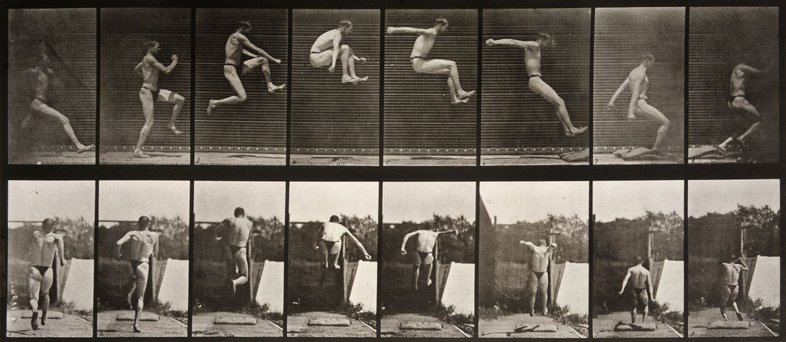
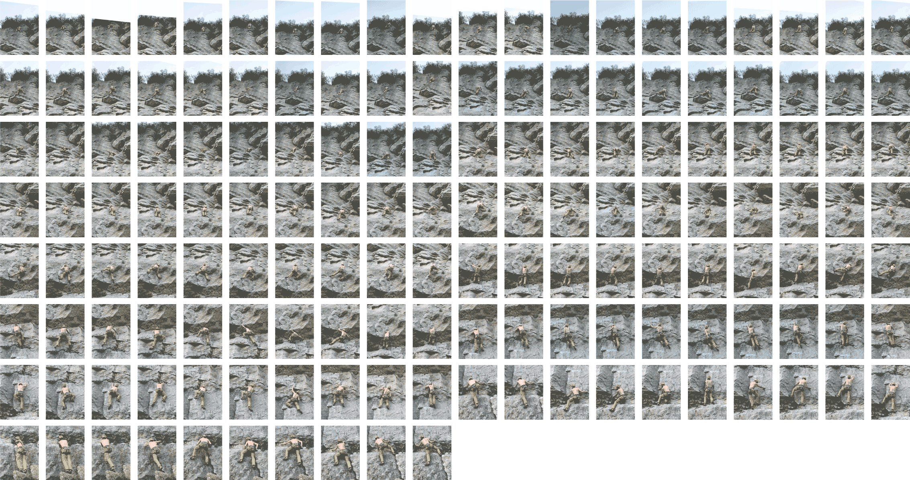

The Climber In Motion
Climb
About
© 2020 Riley Hoonan
The Climber in Motion is an experiment in video data and web technology. It is a data-maximalist view of a climb, inspired by Eadweard Muybridge’s famous photo series studying locomotion in horses and humans.
Data for this project was extracted from a video, shot on a hand-held mobile device. The background image and stills are a composite of 120 frames selected from the set of roughly 16 thousand stills making up the video. Each frame can be seen in the final piece; frames are selected based on the climber’s completion of a single movement; eg. one of the climber’s limbs has moved from point A to point B. In a few cases, movements were obscured or difficult to parse; you can see these instances when multiple limbs move between images.
To estimate the distances between each movement, I used known heights (the height of the climber and the total height climbed) to build an exponential regression that estimated the real distance (in feet) per pixel, accounting for distortion caused by perspective. This estimation could be improved with a fixed camera perspective, more detailed topology and/or a myriad of other adjustments, but for now is meant as a proof of concept.
Stylistic choices were made for the sake of scope and simplicity – black and white imagery is easier to manage for composites; reducing the color gamut means distracting details like the change in lighting quality are mitigated; monospace fonts keep numbers easy to compare.
Tech:
Composite images were built in Photoshop
Pixel-to-foot estimates were built with Node using D3-Regression
Visualizations were built with HTML, CSS, and D3
Thank You:
Logan Cerelli-Lough, the climber in question, for his collaboration and patience
Tomas DeCarcer, Nathan Singhapok & Eric Petersen for their guidance and feedback
Questions, comments or feedback? Please do reach out.